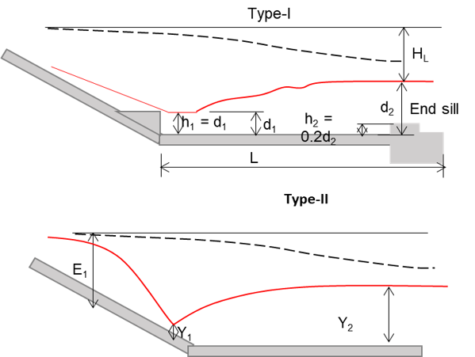

Mr. Nabin Kumar Ijam | Civil Engineer | Structural & Hydropower Specialist
HOME
MY BACKGROUND
MY WORKS
CIVIL ENGINEERING NOTES
OTHERS
DOWNLOADS
IMAGES
CONTACTS
HYDRAULIC DESIGN OF STILLING BASIN
Flood discharge (Q in m
3
/s):
Upstream water level (HFL in m):
Weir invert level (WIL in m):
Tail water level (TWL in m):
Length of spillway (B in m):
Type of basin:
I
II
STILLING BASIN DESIGN
Design Results
